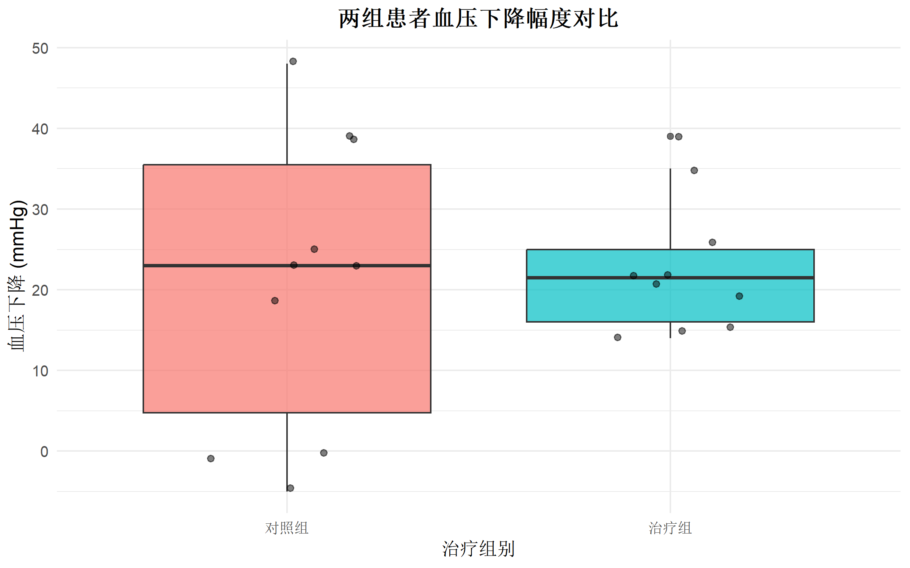
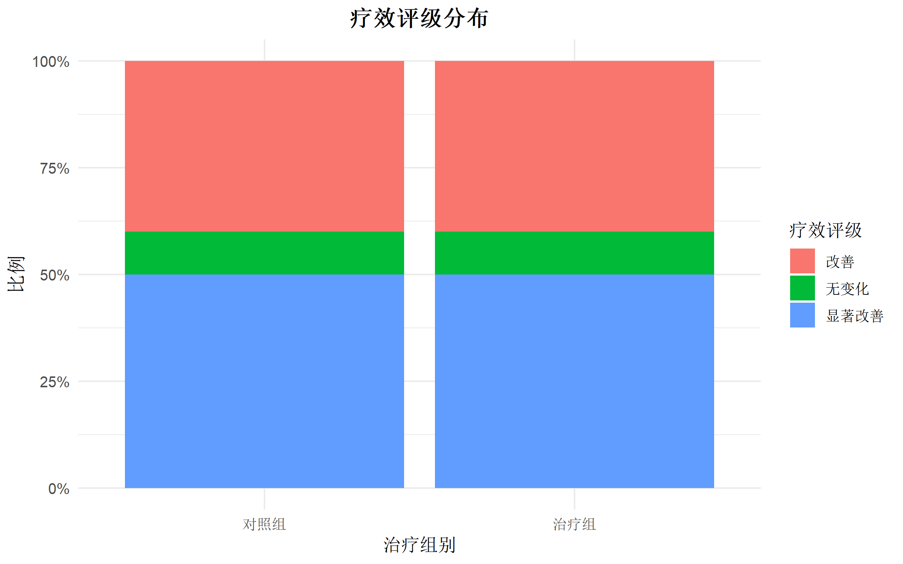
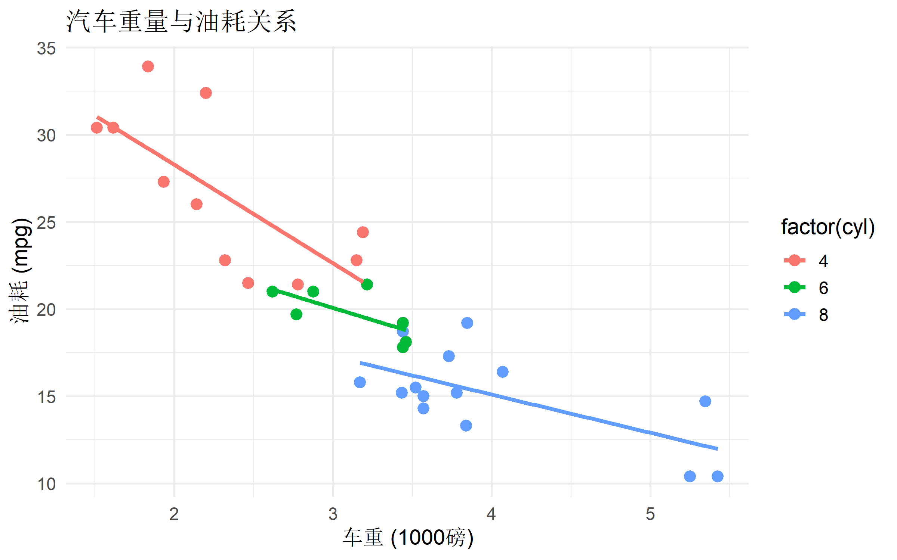

# 安装 officer 主包
install.packages("officer")
# 安装配套可视化包（用于生成图表插入文档）
install.packages("rvg") # 矢量图形
install.packages("ggplot2") # 绘图
install.packages("flextable") # 高级表格
install.packages("mschart") # Office 原生图表
# 从 GitHub 安装开发版（如需最新功能）
# remotes::install_github("davidgohel/officer")officer: R语言操作Office文档的终极解决方案
实用 R 包
文档操作
报告生成
Office
使用officer包自动化生成Word、Excel、PowerPoint文档，实现R与Office的无缝集成
包简介与定位
officer 是 R 语言中操作 Microsoft Office 文档（Word、PowerPoint、Excel）的核心包，由 David Gohel 开发维护。它提供了一套完整的 API，让你能够用纯 R 代码自动化生成专业的 Office 文档，无需手动复制粘贴，真正实现可重复的研究报告流程。
officer 的核心价值
| 场景 | 传统方式 | officer 方案 |
|---|---|---|
| 生成周报 | 手动复制 R 结果到 Word | 一键生成完整报告 |
| 更新图表 | 重新截图粘贴 | 代码自动更新 |
| 批量报告 | 逐个手动制作 | 循环批量生成 |
| 协作共享 | 格式混乱 | 统一模板输出 |
officer vs 其他方案
| 特性 | officer | RMarkdown (docx) | openxlsx | ReporteRs |
|---|---|---|---|---|
| Word 支持 | ✅ 完整 | ✅ 基础 | ❌ | ⚠️ 已废弃 |
| PowerPoint | ✅ 完整 | ❌ | ❌ | ⚠️ 已废弃 |
| Excel | ✅ 基础 | ❌ | ✅ 完整 | ❌ |
| 学习曲线 | 中等 | 低 | 低 | - |
| 维护状态 | 活跃 | 活跃 | 活跃 | 停止 |
注意: ReporteRs 包已被 officer 完全替代，不再维护。
功能架构
架构说明：上图展示了 officer 的三大核心模块及其主要功能。Word 模块功能最完善，支持段落、表格、图片、页眉页脚等几乎所有文档元素；PowerPoint 模块支持幻灯片、版式、图形等；Excel 模块提供基础读写能力，复杂操作可结合 openxlsx。
安装与加载
安装 officer 及相关包
加载必要的包
library(officer)
library(ggplot2)
library(flextable)
library(dplyr)系统要求
| 组件 | 要求 |
|---|---|
| R 版本 | ≥ 3.5.0 |
| 操作系统 | Windows/macOS/Linux |
| Office 软件 | Microsoft Office 2010+ / LibreOffice / WPS |
核心功能清单
officer 提供了 200+ 个函数，覆盖 Office 文档操作的各个方面：
Word 文档操作
| 功能类别 | 主要函数 | 说明 |
|---|---|---|
| 文档创建 | read_docx(), docx_summary() |
读取/创建文档 |
| 段落操作 | body_add_par(), body_add_blocks() |
添加文本段落 |
| 表格插入 | body_add_table(), body_add_flextable() |
插入表格 |
| 图片插入 | body_add_img(), body_add_plot() |
插入图片/图表 |
| 样式设置 | body_add_toc(), body_add_break() |
目录/分页 |
| 文档属性 | docx_bookmarks(), docx_tables() |
查看结构 |
PowerPoint 操作
| 功能类别 | 主要函数 | 说明 |
|---|---|---|
| 演示文稿 | read_pptx(), add_slide() |
创建幻灯片 |
| 内容添加 | ph_with_text(), ph_with_table() |
添加内容 |
| 图形操作 | ph_with_gg(), ph_with_vg() |
插入 ggplot |
| 版式管理 | slide_layouts(), slide_master() |
管理模板 |
Excel 操作（基础）
| 功能类别 | 主要函数 | 说明 |
|---|---|---|
| 工作簿操作 | read_xlsx(), xl_book() |
读取工作簿 |
| 数据写入 | xl_add_data(), xl_add_chart() |
添加数据/图表 |
快速开始：5分钟入门
示例1：创建最简单的 Word 文档
# 创建一个新文档
doc <- read_docx() # 创建空白文档，或 read_docx("template.docx") 基于模板
# 添加标题
doc <- doc %>%
body_add_par("我的第一份自动化报告", style = "heading 1")
# 添加正文
doc <- doc %>%
body_add_par("这是使用 officer 自动生成的 Word 文档。")
# 保存文档
print(doc, target = "我的报告.docx")示例2：创建包含表格和图片的文档
# 准备数据
data <- data.frame(
姓名 = c("张三", "李四", "王五"),
年龄 = c(28, 35, 42),
部门 = c("技术部", "销售部", "人事部")
)
# 创建图表
plot <- ggplot(data, aes(x = 部门, y = 年龄, fill = 部门)) +
geom_bar(stat = "identity") +
theme_minimal()
# 构建文档
doc <- read_docx() %>%
body_add_par("员工统计报告", style = "heading 1") %>%
body_add_par("数据概览：") %>%
body_add_table(data, style = "table_template") %>%
body_add_par("") %>%
body_add_par("可视化：") %>%
body_add_gg(plot, width = 6, height = 4)
# 保存
print(doc, target = "员工报告.docx")示例3：批量生成个性化报告
# 模拟需要批量生成报告的员工数据
employees <- data.frame(
姓名 = c("张三", "李四", "王五"),
部门 = c("技术", "销售", "市场"),
绩效评分 = c(88, 92, 85),
入职日期 = c("2020-03-15", "2019-08-20", "2021-01-10")
)
# 批量生成报告
for (i in 1:nrow(employees)) {
emp <- employees[i, ]
doc <- read_docx() %>%
body_add_par(paste0(emp$姓名, " - 年度绩效报告"),
style = "heading 1") %>%
body_add_par(paste0("部门：", emp$部门)) %>%
body_add_par(paste0("绩效评分：", emp$绩效评分,
ifelse(emp$绩效评分 >= 90, " (优秀)", " (良好)"))) %>%
body_add_par(paste0("入职日期：", emp$入职日期))
print(doc, target = paste0("报告_", emp$姓名, ".docx"))
}完整示例：Word 文档自动化
Word 是 officer 最强大的应用场景。下面展示如何从零开始构建一份完整的研究报告。
数据准备
# 使用内置数据集并模拟研究数据
set.seed(2026)
# 模拟临床试验数据
clinical_data <- data.frame(
患者ID = paste0("P", sprintf("%03d", 1:20)),
组别 = rep(c("治疗组", "对照组"), each = 10),
年龄 = round(rnorm(20, 55, 10)),
性别 = sample(c("男", "女"), 20, replace = TRUE),
基线血压 = round(rnorm(20, 140, 15)),
治疗后血压 = round(rnorm(20, 125, 12)),
疗效评级 = sample(c("显著改善", "改善", "无变化"), 20,
prob = c(0.4, 0.4, 0.2), replace = TRUE)
)
# 计算血压变化
clinical_data$血压下降 <- clinical_data$基线血压 - clinical_data$治疗后血压
# 查看前几行
head(clinical_data, 5) 患者ID 组别 年龄 性别 基线血压 治疗后血压 疗效评级 血压下降
1 P001 治疗组 60 女 132 111 显著改善 21
2 P002 治疗组 44 女 142 123 改善 19
3 P003 治疗组 56 女 136 114 显著改善 22
4 P004 治疗组 54 男 145 130 显著改善 15
5 P005 治疗组 48 女 143 117 无变化 26基础统计分析
# 分组统计
summary_stats <- clinical_data %>%
group_by(组别) %>%
summarise(
人数 = n(),
平均年龄 = round(mean(年龄), 1),
平均血压下降 = round(mean(血压下降), 1),
标准差 = round(sd(血压下降), 1),
改善率 = paste0(round(sum(疗效评级 %in% c("显著改善", "改善")) / n() * 100, 1), "%")
)
summary_stats# A tibble: 2 × 6
组别 人数 平均年龄 平均血压下降 标准差 改善率
<chr> <int> <dbl> <dbl> <dbl> <chr>
1 对照组 10 53 21 18.3 90%
2 治疗组 10 49.1 22.8 8.4 90% 创建可视化图表
# 图1：血压变化箱线图
p1 <- ggplot(clinical_data, aes(x = 组别, y = 血压下降, fill = 组别)) +
geom_boxplot(alpha = 0.7) +
geom_jitter(width = 0.2, alpha = 0.5) +
labs(title = "两组患者血压下降幅度对比",
x = "治疗组别",
y = "血压下降 (mmHg)") +
theme_minimal(base_size = 12) +
theme(legend.position = "none",
plot.title = element_text(hjust = 0.5, face = "bold"))
p1
# 图2：疗效评级分布
p2 <- clinical_data %>%
count(组别, 疗效评级) %>%
ggplot(aes(x = 组别, y = n, fill = 疗效评级)) +
geom_bar(stat = "identity", position = "fill") +
scale_y_continuous(labels = scales::percent) +
labs(title = "疗效评级分布",
x = "治疗组别",
y = "比例") +
theme_minimal(base_size = 12) +
theme(plot.title = element_text(hjust = 0.5, face = "bold"))
p2
构建完整报告
下面展示如何将所有内容整合到一个专业的 Word 文档中：
# ========== 步骤1: 创建文档并设置样式 ==========
doc <- read_docx()
# ========== 步骤2: 添加标题页内容 ==========
doc <- doc %>%
body_add_par("临床试验研究报告", style = "heading 1") %>%
body_add_par("") %>%
body_add_par("研究药物：新型降压药物 XYZ-2026", style = "heading 2") %>%
body_add_par("") %>%
body_add_par("研究编号：CT-2026-001") %>%
body_add_par("报告日期：2026年1月31日") %>%
body_add_par("") %>%
body_add_par("─────────────────────────────") %>%
body_add_break(pos = "after") # 分页
# ========== 步骤3: 添加执行摘要 ==========
doc <- doc %>%
body_add_par("执行摘要", style = "heading 1") %>%
body_add_par("") %>%
body_add_par(
paste0("本研究纳入", nrow(clinical_data),
"名高血压患者，随机分为治疗组和对照组。",
"结果显示治疗组平均血压下降",
summary_stats$平均血压下降[summary_stats$组别 == "治疗组"],
" mmHg，显著优于对照组的",
summary_stats$平均血压下降[summary_stats$组别 == "对照组"],
" mmHg。总体改善率达到",
round(sum(clinical_data$疗效评级 %in% c("显著改善", "改善")) /
nrow(clinical_data) * 100, 1),
"%。")
) %>%
body_add_par("") %>%
body_add_break(pos = "after")
# ========== 步骤4: 添加统计结果表格 ==========
doc <- doc %>%
body_add_par("基线特征与疗效", style = "heading 1") %>%
body_add_par("") %>%
body_add_par("表1. 两组患者基线特征与疗效比较", style = "heading 2")
# 使用 flextable 创建美观的表格
ft <- flextable(summary_stats) %>%
set_header_labels(
组别 = "治疗组别",
人数 = "样本量",
平均年龄 = "年龄 (Mean)",
平均血压下降 = "血压下降 (mmHg)",
标准差 = "SD",
改善率 = "有效率"
) %>%
theme_booktabs() %>%
autofit()
doc <- doc %>%
body_add_flextable(ft) %>%
body_add_par("") %>%
body_add_par("注：血压下降 = 基线血压 - 治疗后血压", style = "footnote text")
# ========== 步骤5: 添加图表 ==========
doc <- doc %>%
body_add_break(pos = "before") %>%
body_add_par("数据分析", style = "heading 1") %>%
body_add_par("") %>%
body_add_par("图1. 血压变化对比", style = "heading 2") %>%
body_add_gg(p1, width = 6, height = 4) %>%
body_add_par("") %>%
body_add_par("图2. 疗效评级分布", style = "heading 2") %>%
body_add_gg(p2, width = 6, height = 4)
# ========== 步骤6: 添加详细数据附录 ==========
doc <- doc %>%
body_add_break(pos = "before") %>%
body_add_par("附录：详细数据", style = "heading 1") %>%
body_add_par("")
# 添加前10条原始数据
ft_detailed <- flextable(head(clinical_data, 10)) %>%
theme_booktabs() %>%
autofit()
doc <- doc %>%
body_add_flextable(ft_detailed) %>%
body_add_par("") %>%
body_add_par("... (仅展示前10条记录)", style = "italic")
# ========== 步骤7: 保存文档 ==========
print(doc, target = "临床试验报告.docx")运行上述代码后，你将得到一个包含以下内容的完整 Word 报告：
- 封面：研究标题和基本信息
- 执行摘要：关键发现概述
- 统计表格：格式化的分组比较表
- 可视化：血压变化和疗效分布图
- 数据附录：原始数据展示
使用模板提升效率
如果你有固定的报告格式，可以创建 Word 模板：
# 创建基于模板的文档
doc <- read_docx("我的机构模板.docx")
# officer 会自动识别模板中的样式
# 你可以在模板中预设：
# - 页眉页脚
# - 标题样式
# - 表格样式
# - 公司Logo模板创建建议： 1. 在 Word 中设计好封面、页眉页脚 2. 设置好各级标题样式（Heading 1/2/3） 3. 保存为 .docx 文件 4. 用 officer 读取并填充内容
PowerPoint 自动化演示文稿
PowerPoint 是汇报和展示研究成果的重要工具。officer 让你能够用数据驱动的程序化方式创建幻灯片。
PowerPoint 基础操作
# ========== 步骤1: 创建或读取演示文稿 ==========
# 创建空白演示文稿
ppt <- read_pptx()
# 或基于模板创建
# ppt <- read_pptx("公司模板.pptx")
# ========== 步骤2: 添加幻灯片 ==========
# 添加标题页
ppt <- ppt %>%
add_slide(layout = "Title Slide", master = "Office Theme") %>%
ph_with_text(type = "title", str = "研究项目汇报") %>%
ph_with_text(type = "subTitle", str = "临床试验初步结果")
# 添加内容页
ppt <- ppt %>%
add_slide(layout = "Title and Content", master = "Office Theme") %>%
ph_with_text(type = "title", str = "研究概况") %>%
ph_with_text(type = "body", str = "• 样本量：100例\n• 研究周期：12个月\n• 主要终点：血压控制率")
# ========== 步骤3: 保存 ==========
print(ppt, target = "研究汇报.pptx")查看可用版式
不同 PowerPoint 模板提供不同的版式（Layout）：
# 查看当前演示文稿的所有版式
slide_layouts(ppt)
# 查看某个版式的详细信息（占位符位置）
layout_properties(ppt, layout = "Title and Content")
# 查看所有母版
slide_master(ppt)在幻灯片中插入图表
这是 officer 最强大的功能之一——将 ggplot2 图表直接转为 Office 原生图形：
# 创建示例图表
ppt_plot <- ggplot(mtcars, aes(x = wt, y = mpg, color = factor(cyl))) +
geom_point(size = 3) +
geom_smooth(method = "lm", se = FALSE) +
labs(title = "汽车重量与油耗关系",
x = "车重 (1000磅)",
y = "油耗 (mpg)") +
theme_minimal(base_size = 14)
ppt_plot
# 将图表插入 PowerPoint
ppt <- read_pptx() %>%
add_slide(layout = "Title and Content", master = "Office Theme") %>%
ph_with_text(type = "title", str = "数据分析结果") %>%
ph_with_gg(value = ppt_plot, type = "body",
width = 8, height = 5.5)
print(ppt, target = "带图表的汇报.pptx")插入表格到 PowerPoint
# 创建演示数据
sales_data <- data.frame(
季度 = c("Q1", "Q2", "Q3", "Q4"),
销售额 = c(120, 150, 180, 210),
增长率 = c("15%", "25%", "20%", "17%")
)
# 创建表格幻灯片
ppt <- read_pptx() %>%
add_slide(layout = "Title and Content") %>%
ph_with_text(type = "title", str = "季度销售业绩") %>%
ph_with_table(type = "body", value = sales_data)
print(ppt, target = "销售报告.pptx")使用 flextable 创建专业表格
# 创建美观的表格
ft_ppt <- flextable(sales_data) %>%
theme_booktabs() %>%
color(i = ~ 销售额 > 150, color = "green") %>%
bold(i = ~ 销售额 == max(销售额)) %>%
autofit()
ppt <- read_pptx() %>%
add_slide(layout = "Title Only") %>%
ph_with_text(type = "title", str = "季度销售业绩") %>%
# 使用 ph_with_flextable_at 可以精确控制位置
ph_with_flextable_at(ft_ppt, left = 1, top = 2,
width = 8, height = 4)
print(ppt, target = "专业表格报告.pptx")批量生成个性化幻灯片
# 模拟多个地区的销售数据
regions <- c("华北", "华东", "华南", "西部")
# 创建汇总演示文稿
ppt <- read_pptx()
for (region in regions) {
# 为每个地区创建一页
ppt <- ppt %>%
add_slide(layout = "Title and Content") %>%
ph_with_text(type = "title",
str = paste0(region, "地区销售报告")) %>%
ph_with_text(type = "body",
str = paste0("• 负责区域：", region, "\n",
"• 季度目标：完成\n",
"• 同比增长：", sample(10:30, 1), "%"))
}
print(ppt, target = "全国销售汇总.pptx")Word 高级功能
操作文档结构
# ========== 书签操作 ==========
# 查看文档中的所有书签
doc <- read_docx("带书签的文档.docx")
docx_bookmarks(doc)
# 在书签位置插入内容
doc <- doc %>%
body_bookmark("书签名称") %>% # 定位到书签
body_add_par("在书签位置插入的新内容")
# ========== 操作现有表格 ==========
# 查看文档中的表格
docx_tables(doc)
# 修改特定表格
doc <- doc %>%
body_add_table_at(data, at = 1) # 在第1个表格位置替换高级格式设置
# ========== 设置段落格式 ==========
library(officer)
# 创建带格式的段落
doc <- read_docx() %>%
body_add_par("居中对齐的标题", style = "heading 1") %>%
body_add_par("") %>%
# 使用 fpar 创建富文本段落
body_add_fpar(
fpar(
ftext("这段文字包含"),
ftext("粗体", prop = fp_text(bold = TRUE)),
ftext("和"),
ftext("红色", prop = fp_text(color = "red")),
ftext("文字。")
)
)
# ========== 添加页眉页脚 ==========
# 设置页眉
doc <- doc %>%
headers_replace_text_at_bkm(
bookmark = "页眉位置",
text = "机密文档"
)
# 设置页脚（页码）
doc <- doc %>%
footers_replace_all_text(
old_value = "页脚占位符",
new_value = "第 {PAGE} 页"
)添加目录
# 创建带目录的文档
doc <- read_docx() %>%
body_add_par("目录", style = "heading 1") %>%
body_add_toc(level = 2) %>% # 添加目录，包含2级标题
body_add_break(pos = "after") %>%
body_add_par("第一章", style = "heading 1") %>%
body_add_par("第一章内容...") %>%
body_add_par("第二章", style = "heading 1") %>%
body_add_par("1.1 小节", style = "heading 2") %>%
body_add_par("小节内容...")
print(doc, target = "带目录的文档.docx")提示：Word 目录需要手动更新（打开文档后右键目录选择”更新域”），或使用
docx_reference_bookmarks()自动刷新。
插入外部文件
# 在文档中插入另一个 Word 文件的内容
doc <- read_docx() %>%
body_add_par("主文档内容", style = "heading 1") %>%
body_add_docx(src = "附件.docx") # 插入另一个文档
# 插入图片文件
doc <- doc %>%
body_add_img(src = "图片.png", width = 6, height = 4)
# 插入 R 生成的图表
doc <- doc %>%
body_add_plot(ggplot_object, width = 6, height = 4)Excel 操作基础
officer 对 Excel 的支持相对基础，适合简单的数据导出。对于复杂的 Excel 操作（公式、格式化、图表），建议结合 openxlsx 包使用。
基础读写操作
# ========== 读取 Excel 文件 ==========
# 使用 officer 读取（返回数据框列表）
library(officer)
# 读取所有工作表
wb <- read_xlsx("数据.xlsx")
# 查看工作表名称
names(wb)
# 读取特定工作表
sheet_data <- wb[["Sheet1"]]
# ========== 写入 Excel 文件 ==========
# 创建工作簿
wb <- xl_book()
# 添加数据到工作表
wb <- wb %>%
xl_add_data(sheet = "Sheet1", data = mtcars)
# 保存
xl_save(wb, "输出.xlsx")推荐方案：officer + openxlsx 组合
# 复杂 Excel 操作使用 openxlsx
library(openxlsx)
# 创建带格式的 Excel
wb <- createWorkbook()
addWorksheet(wb, "销售数据")
# 写入数据
writeData(wb, "销售数据", sales_data, startRow = 1, startCol = 1)
# 添加格式
header_style <- createStyle(
textDecoration = "bold",
fgFill = "#4F81BD",
fontColour = "white"
)
addStyle(wb, "销售数据", header_style, rows = 1, cols = 1:3)
# 添加图表
addChart(wb, "销售数据",
chart = list(type = "bar", series = "销售额"))
# 保存
saveWorkbook(wb, "专业报表.xlsx", overwrite = TRUE)批量导出多个数据表
library(openxlsx)
# 准备多个数据表
data_list <- list(
"患者基线" = clinical_data[, c("患者ID", "年龄", "性别")],
"疗效评估" = clinical_data[, c("患者ID", "疗效评级", "血压下降")],
"统计分析" = summary_stats
)
# 创建多工作表 Excel
wb <- createWorkbook()
for (sheet_name in names(data_list)) {
addWorksheet(wb, sheet_name)
writeData(wb, sheet_name, data_list[[sheet_name]])
}
saveWorkbook(wb, "完整数据集.xlsx", overwrite = TRUE)最佳实践：简单导出用
officer::read_xlsx()/xl_book()，复杂格式化用openxlsx。
最佳实践与技巧
1. 项目结构建议
报告项目/
├── templates/ # 存放 Word/PPT 模板
│ ├── 机构模板.docx
│ └── 汇报模板.pptx
├── output/ # 输出目录
│ └── .gitignore # 忽略生成的文件
├── scripts/ # R 脚本
│ ├── 01_生成报告.R
│ └── 02_批量处理.R
└── data/ # 数据文件
└── 原始数据.csv2. 函数封装
# 封装常用的报告生成功能
generate_clinical_report <- function(data, output_file,
template = NULL) {
# 数据验证
stopifnot(all(c("患者ID", "疗效评级") %in% names(data)))
# 统计分析
stats <- data %>%
group_by(疗效评级) %>%
summarise(人数 = n())
# 创建文档
if (!is.null(template)) {
doc <- read_docx(template)
} else {
doc <- read_docx()
}
# 添加内容
doc <- doc %>%
body_add_par("临床疗效报告", style = "heading 1") %>%
body_add_par(paste0("生成时间：", Sys.Date())) %>%
body_add_par("") %>%
body_add_table(stats)
# 保存
print(doc, target = output_file)
message("报告已生成: ", output_file)
}
# 使用
# generate_clinical_report(clinical_data, "疗效报告.docx")3. 批量报告生成优化
# 批量生成时显示进度
batch_reports <- function(data_list, template) {
total <- length(data_list)
for (i in seq_along(data_list)) {
# 显示进度
message(sprintf("[%d/%d] 生成报告: %s", i, total, names(data_list)[i]))
# 生成报告
generate_clinical_report(
data = data_list[[i]],
output_file = paste0("报告_", names(data_list)[i], ".docx"),
template = template
)
# 可选：添加延迟避免系统过载
# Sys.sleep(0.5)
}
message("✓ 所有报告生成完毕")
}4. 与 RMarkdown 结合
在 RMarkdown 中嵌入 officer 代码：
# 在 RMarkdown 文档中生成 Word 并嵌入常见错误与排查
错误1：文件被占用
错误信息：
Error: Cannot open file for writing原因：目标文件已被 Word/PowerPoint 打开。
解决： 1. 关闭所有打开的 Office 文档 2. 重新运行代码 3. 或输出到不同文件名
错误2：模板路径错误
错误信息：
Error: File does not exist: 模板.docx解决：
# 使用绝对路径或正确相对路径
doc <- read_docx("C:/模板/机构模板.docx")
# 或
doc <- read_docx(here::here("templates", "机构模板.docx"))错误3：幻灯片版式不存在
错误信息：
Error: Layout 'Title Slide' not found解决：
# 先查看可用版式
ppt <- read_pptx("模板.pptx")
slide_layouts(ppt)
# 使用正确的版式名称
ppt %>% add_slide(layout = "存在的版式名称")错误4：图表不显示或变形
问题：插入的 ggplot 图表模糊或尺寸不对。
解决：
# 指定高分辨率输出
doc %>%
body_add_gg(plot, width = 6, height = 4,
res = 300) # 提高分辨率
# 或使用矢量格式
library(rvg)
doc %>%
body_add_vg(plot) # 插入为矢量图形调试技巧
# 1. 逐步构建文档，每步检查
doc <- read_docx()
doc <- doc %>% body_add_par("测试")
print(doc, target = "测试.docx") # 中间检查点
# 2. 查看文档结构
print(docx_summary(doc)) # 查看段落和表格
print(docx_bookmarks(doc)) # 查看书签
# 3. 使用 tryCatch 捕获错误
tryCatch({
doc <- read_docx("可能损坏的文件.docx")
}, error = function(e) {
message("读取失败，使用空白文档")
doc <- read_docx()
})常用代码速查
Word 操作速查
# ===== 文档操作 =====
doc <- read_docx() # 新建文档
doc <- read_docx("模板.docx") # 基于模板
print(doc, target = "输出.docx") # 保存文档
# ===== 添加内容 =====
doc %>% body_add_par("文本", style = "heading 1")
doc %>% body_add_table(data, style = "table_template")
doc %>% body_add_gg(plot, width = 6, height = 4)
doc %>% body_add_img("图片.png", width = 6, height = 4)
doc %>% body_add_break(pos = "before") # 分页
# ===== 高级操作 =====
doc %>% body_add_toc(level = 2) # 添加目录
docx_bookmarks(doc) # 查看书签
docx_tables(doc) # 查看表格PowerPoint 操作速查
# ===== 演示文稿操作 =====
ppt <- read_pptx() # 新建演示文稿
ppt %>% add_slide(layout = "标题") # 添加幻灯片
slide_layouts(ppt) # 查看版式
print(ppt, target = "汇报.pptx") # 保存
# ===== 添加内容 =====
ppt %>% ph_with_text(type = "title", str = "标题")
ppt %>% ph_with_table(type = "body", value = data)
ppt %>% ph_with_gg(value = plot, type = "body")
ppt %>% ph_with_flextable_at(ft, left = 1, top = 2)Excel 操作速查
# ===== officer 基础 =====
wb <- read_xlsx("文件.xlsx") # 读取
wb <- xl_book() # 新建
wb %>% xl_add_data(sheet = "Sheet1", data = df)
xl_save(wb, "输出.xlsx")
# ===== openxlsx 高级操作 =====
wb <- createWorkbook()
addWorksheet(wb, "工作表1")
writeData(wb, "工作表1", data)
addStyle(wb, "工作表1", style, rows = 1, cols = 1:3)
saveWorkbook(wb, "输出.xlsx")实战案例：研究周报自动化
下面是一个完整的研究周报自动化流程：
# ========== 研究周报自动生成脚本 ==========
library(officer)
library(flextable)
library(ggplot2)
library(dplyr)
# 1. 读取本周数据
weekly_data <- read.csv("data/本周数据.csv")
# 2. 统计分析
stats <- weekly_data %>%
summarise(
总入组人数 = n(),
完成随访 = sum(随访状态 == "完成"),
不良事件 = sum(不良事件数 > 0, na.rm = TRUE),
完成率 = paste0(round(完成随访 / 总入组人数 * 100, 1), "%")
)
# 3. 创建可视化
p_weekly <- weekly_data %>%
count(入组日期) %>%
ggplot(aes(x = 入组日期, y = n)) +
geom_col(fill = "steelblue") +
labs(title = "本周入组人数趋势") +
theme_minimal()
# 4. 生成 Word 报告
doc <- read_docx("templates/周报模板.docx") %>%
body_replace_all_text("{报告日期}", format(Sys.Date(), "%Y年%m月%d日")) %>%
body_replace_all_text("{总入组}", as.character(stats$总入组人数)) %>%
body_replace_all_text("{完成率}", stats$完成率) %>%
body_add_par("本周统计摘要", style = "heading 1") %>%
body_add_flextable(flextable(stats) %>% theme_booktabs()) %>%
body_add_par("") %>%
body_add_par("入组趋势", style = "heading 2") %>%
body_add_gg(p_weekly, width = 6, height = 3.5)
# 5. 保存
output_file <- paste0("周报_", format(Sys.Date(), "%Y%m%d"), ".docx")
print(doc, target = file.path("output", output_file))
message("✓ 周报已生成: ", output_file)小结
officer 是 R 语言操作 Office 文档的最佳选择，特别适合以下场景：
| 场景 | 推荐方案 |
|---|---|
| 生成标准化报告 | officer + Word模板 |
| 数据驱动演示文稿 | officer + PowerPoint |
| 简单数据导出 | officer::xl_book() |
| 复杂 Excel 报表 | officer + openxlsx |
| 批量个性化文档 | officer 循环生成 |
学习路径建议
- 入门：从
read_docx() %>% body_add_par() %>% print()开始 - 进阶：掌握表格插入
body_add_flextable()和图表插入body_add_gg() - 高级：学习模板使用、书签定位、批量生成
相关资源
技巧：officer 的函数命名遵循一致的规则：
body_add_*用于 Word，ph_with_*用于 PowerPoint，xl_*用于 Excel。掌握这个规律后，学习新功能会更加轻松。